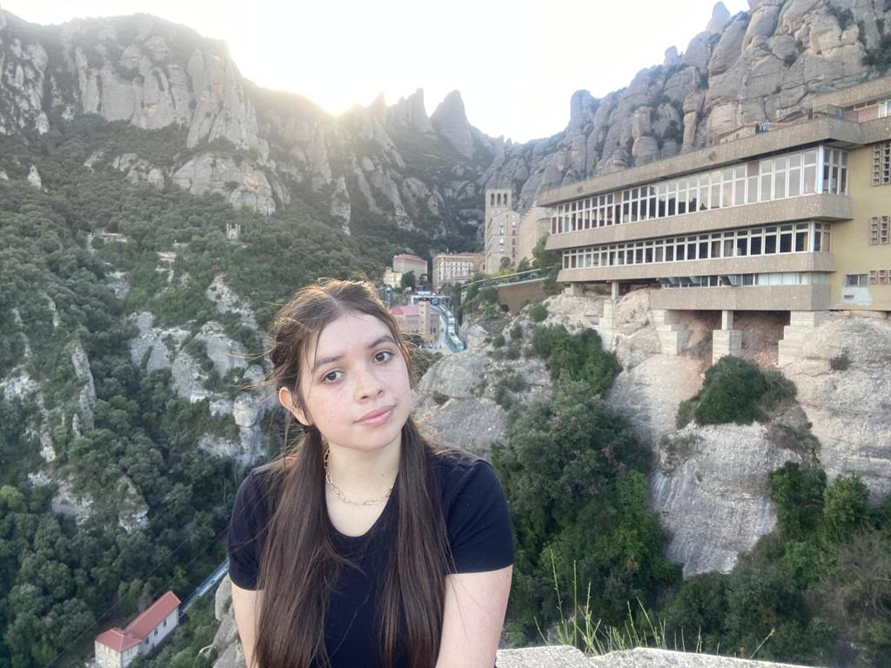

Somos un equipo de estudiantes del Bootcamp de programación basica, apasionadas por la tecnología y los viajes.
Creamos este sitio como proyecto final con el fin de ofrecer información útil y clara sobre vuelos y destinos turísticos en distintas partes de Colombia.
Nuestro enfoque esta en el area de aerolineas ya que es allí en donde se encuentra nuestro nicho profesional, al llevar mas de cinco años de experiencia cada una en el area de calidad de software de aerolineas

Juliana
En este proyecto fui responsable de desarrollar la página de turismo, utilizando HTML, CSS, JavaScript, JSON, además de consumir datos de una API pública para mostrar los sitios turísticos según la ciudad seleccionada por el usuario.
Ingresé al curso con el propósito de adquirir bases sólidas en programación, con el objetivo de aplicarlas en el ámbito laboral y continuar desarrollando mi aprendizaje a partir de los conocimientos adquiridos durante el curso."
Luisa
Mi colaboración en este proyecto radicó en una de las páginas secundarias como lo es la del Clima, asumiendo retos de gran magnitud como encargarme de hacerla atractiva también funcional y dinámica, esto me ayudó además de adquirir conocimiento también a potenciar habilidades tanto técnicas como personales.
Mi parte favorita de esta experiencia tan enriquecedora fue el análisis para los diferentes ejericios vividos en cada clase y plasmar gran parte en este proyecto Vuela donde la vista y sobre todo funcionalidad correcta debian ser sobresalientes
Mi objetivo post - Bootcamp es enriquecer mi perfil profesional, a nivel laboral poder implementar lo aprendido, fortalecerlo y asi facilitar y optimizar mi desempeño en él.

Nataly
En este proyecto me encargué de desarrollar la página del buscador, utilizando HTML, CSS, JavaScript y JSON para mostrar los resultados de vuelos según los criterios seleccionados por el usuario.
Mi parte favorita fue trabajar con JavaScript, porque disfruto mucho los ejercicios de lógica y el desafío de pensar cómo resolverlos. Me parece muy entretenido imaginar el flujo de una función y luego verla funcionando en la página.
Entré a este curso con un objetivo claro: quiero construir una base sólida en JavaScript porque me gustaría trabajar en el futuro con herramientas de automatización para pruebas de calidad de software, como Postman y Cypress. Siento que este proyecto me acercó un poco más a ese objetivo.
Queremos agradecer al Bootcamp de Programación Básica por brindarnos esta valiosa oportunidad de aprendizaje y crecimiento profesional.
A nuestra profesora Nur, por su dedicación, claridad en cada explicación y, sobre todo, su paciencia para guiarnos paso a paso en el maravilloso pero desafiante mundo de la lógica de programación.
A todos los profesores que, con su experiencia y compromiso, nos compartieron herramientas fundamentales para construir este proyecto.
Un agradecimiento especial a nuestro tutor Iván, siempre dispuesto a aclarar dudas y apoyarnos en el proceso, y al monitor, por su organización y acompañamiento constante durante el desarrollo del Bootcamp.
Finalmente, gracias a nuestros compañeros, quienes con sus preguntas, ideas y colaboración, también aportaron a nuestro crecimiento personal y colectivo.